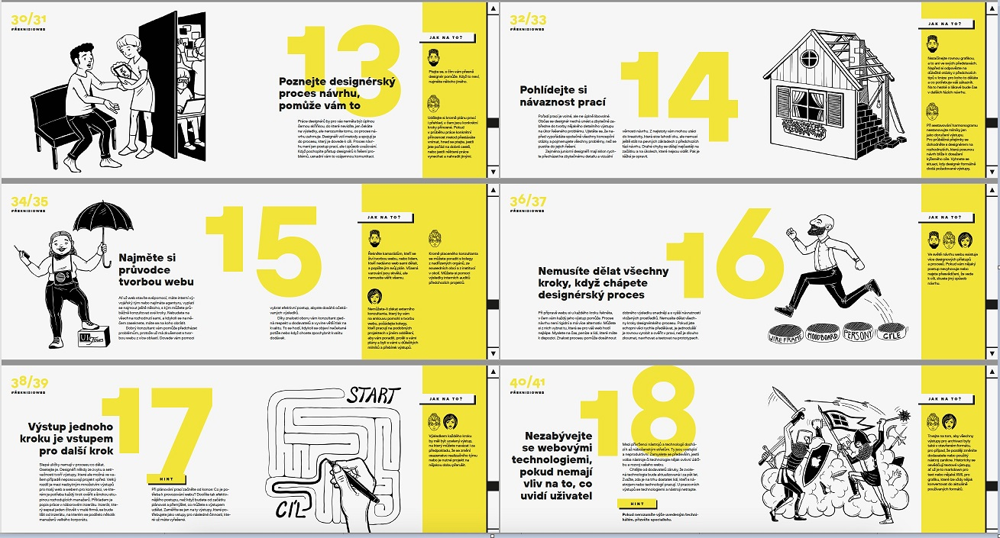
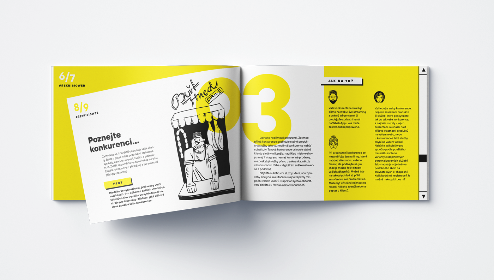
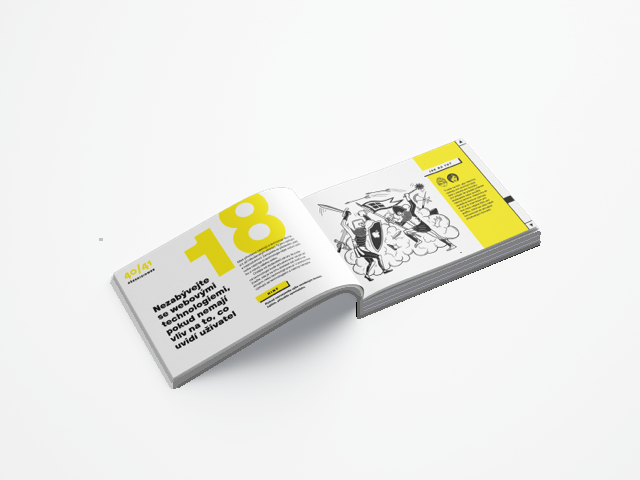

75 tipů jak si říct o web
Praktiká kniha plná návodů, jak se s designerem domluvit na dobře fungujícím webu
Efektivní komunikace: Naučte se jasně definovat své požadavky a úspěšně komunikovat se svými webovými designéry, abyste získali přesně to, co potřebujete.
Základy webového designu: Pochopit základní principy webového designu a rozpoznat kvalitu práce pro lepší kontrolu nad výsledkem projektu.
Úspora času a peněz: S našimi tipy a radami ušetříte čas i peníze díky efektivnějšímu zadání a realizaci webového projektu.
Řekli o naší knize
Každý chceme mít krásný a srozumitelný web. Je ale obrovsky těžké konkretizovat svoji představu tak, aby ji někdo mohl pro vás realizovat, a to ještě dostatečně rychle a levně. Tahle knížka vám může ušetřit hromadu peněz i času. Je napsaná s obrovskou zkušeností z oboru, srozumitelná a názorná. Oceňuju zvlášť to, že autoři nezapomněli ani na zadavatele webů ze státní správy, protože skvělou komunikaci potřebujeme i jinde než v byznysu. Až budu příště zadávat výrobu nebo úpravy webu, nejdřív si projdu tuhle knížku bod po bodu.
Kniha se mi dostala do ruky ve chvíli, kdy už jsme se pár týdnů trápili s novým webem a tím, co od něj chceme. Za víkend jsem Tipy přečetla, promyslela a zápisky poslala designérovi, se kterým spolupracujeme. „Dobré dopoledne! Moc děkuji za zadání, takto to přesně potřebujeme,“ odpověděl. Teď mi přišel první nástřel. A je to přesně tak, jak jsem chtěla. Děkuju.
Názorné příklady a 75 praktických tipů
Kniha spojuje několik přístupů. Přináší praktické rady, nahlížené ze 3 různých úhlů pohledu. Některým tématům jako například brief se věnuje v samostatných kapitolách podrobněji.
 Praktické tipy pro okamžité vyzkoušení.
 Slovníček užitečných termínů
 Přehled zainteresovanbých stran
První kniha pro zadavatele v češině!
Tuto knihu jsme napsali pro ty z vás, kteří potřebují pomoc teď a tady. Napsali jsme ji jasně a srozumitelně, aby se dala snadno číst a jednotlivé rady na sebe logicky navazovaly, ale aby se dala otevřít na jakékoli dvoustraně a rovnou použít v praxi.
70 tipů uvedených v této knize slouží jako seznam úkolů, které musíte udělat, aby váš návrh webu fungoval.
Pro koho a proč jsme knihu psali?
Naši klienti se nás často ptají na to, koho vlastně mají poptat. Jak mají postupovat? Jaké profese budou potřebovat, Naše kniha přináší především pro
- Podnikatele
- Manažery
- Pracovníky ve státní správě.
Co se dozvím v knížce 75 tipů, jak si říci o web?
- Zjistíte co si můžete udělat sami a na co budete potřebovat pomoc odborníka
- Pomůžeme vám, jak začít
- Budete silnější při domlování s dodavateli
- ... a mnoho dalšího!
Co řekli další lidé o knize?
Nadmíru užitečná příručka, která vás bezpečně provede všemi úskalími tvorby nového webu.
Skvělá knížka. Četl jsem ji a mohu zcela upřímně říct, že pokud si chcete začít řešit svůj web, tuhle knížku byste při tom rozhodně měli mít v ruce.
Autoři

Jakub Goldmann
Designér a školitel, věnuje se přednáškám, mentoringu a start-upům, vede designérskou agenturu Švejda–Goldmann v Praze. Specializuje se na webdesign pro velké vydavatelské domy, fintech disruptivní startupy a mobilní aplikace. V knize přináší rady klientům, kteří nevědí, jak do digitálního prostředí vstoupit.

Martin Kopta
Produktový manažer na digitálních platformách. Inicioval založení magisterské specializace na UX design na Fakultě informatiky a statistiky VŠE v Praze, kde také vyučuje. S Jakubem Goldmannem se pracovně setkal v designérském týmu Seznamu a společně pak pracovali na dalších projektech. Martin vede praktický kurz CSS efektivně s Less. Za patnáct let po absolvování grafické školy vystřídal mnohé profese webdesignu: pracoval mimo jiné jako analytik v Advertures a vedl konzultační tým Dobrého webu.

Josef Platil
Produktový manažer pro PIM & BIM ve společnosti Wienerberger AG. Zakládající člen digitálního hubu pro inovace. Vede vývoj, testování a implementaci inovativních přístupů digitalizace stavebnictví. Má patnáct let zkušeností z mezinárodních firem, z toho posledních deset let pracuje jako IT projektový manažer. Do knihy přispěl pohledem člověka, který od designérů přejímá návrh řešení a je zodpovědný za jeho implementaci.
Švejda–Goldmamnn
Navrhujeme vizuální design a UX pro weby a aplikace. Tvoříme a designujeme úspěšné produkty, promýšlíme a dotahujeme věci do konce. Máme za sebou desítky realizací, návrhů, redesignů webů a některé tištěné projekty. Vybíráme pro vás ty, které nám daly největší příležitost se něco nového naučit, a zároveň ty, kde naše spolupráce přinesla skutečně skvělý výsledek.